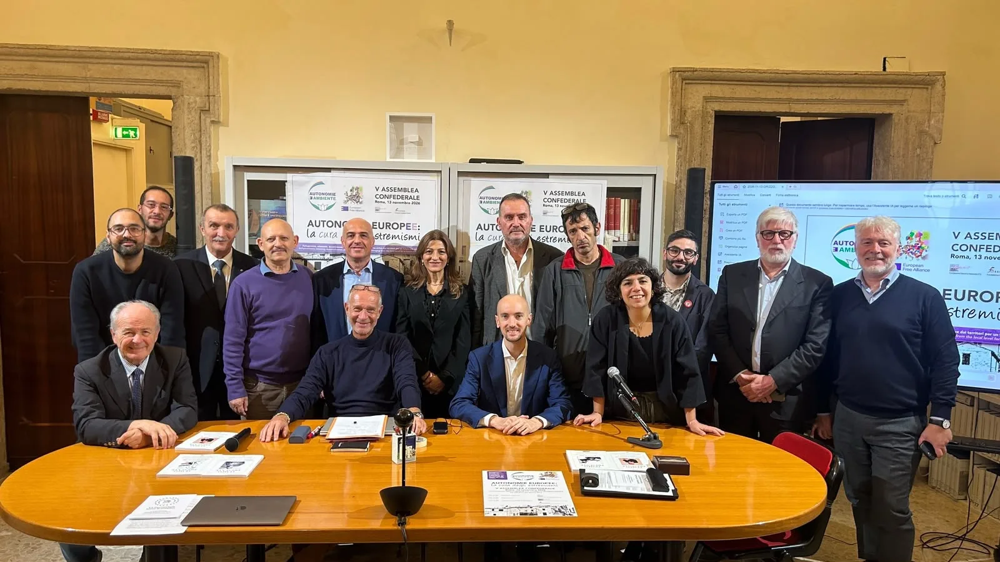

Si è tenuta venerdì 13 novembre 2026 a Roma, presso la Fondazione Matteotti, la V Assemblea confederale di Autonomie e Ambiente (AeA), sul tema «Autonomie europee: la cura degli estremismi». Partecipazione Attiva era presente con il suo portavoce, Luigi Spanu, che ne dà conto in questa pagina.

Come si è svolta
Una sessione pubblica dalle 11:00 alle 14:00 e una sessione pomeridiana riservata ai delegati. Tema centrale: il contrasto a nazionalismi, populismi ed estremismi attraverso le autonomie locali, la partecipazione territoriale e la cooperazione europea, con un approfondimento pomeridiano sull’impegno per la pace.
Erano presenti le forze e i movimenti della rete Autonomie e Ambiente, delegazioni come Union Valdôtaine e Partecipazione Attiva, attivisti per la democrazia e realtà civiche e territoriali italiane ed europee (tra cui Valle d’Aosta, Toscana, Romagna, Occitania, Friuli-Venezia Giulia, Veneto, Lombardia e Campania).
Il video dell’assemblea
L’intervento di Luigi Spanu è a circa 2:40:00 dall’inizio della registrazione.
Guarda l’assemblea completa su YouTube →
Le delegazioni ritratte nella foto
Da sinistra a destra, dal basso verso l’alto.
- Luigi Spanu (Partecipazione Attiva – Roma)
- Thomas Agnolli (attivista del Comitato Iniziative Popolari – Veneto)
- Lorenzo Giovenali (attivista per la democrazia – Lombardia)
- Enrico Bocca (Lombardia Civica)
- Alessandro Citarella (Comitato Charta di Melfi, Meridionalisti Democratici, Autonomia Napolitana)
- Riccardo Galimberti (OraToscana, RiBella Firenze)
- Enrico Chiapparoli (Lombardia Civica)
- Lidia Silvia Fancello (Sardigna Pro S’Europa)
- Frédéric Piccoli (Union Valdôtaine)
- Mauro Vaiani (OraToscana, Civici di Prato per le autonomie)
- Milian Racca (Liberi Elettori Piemonte)
- Sabrina Tomasi (Sardegna chiama Sardegna – SCS)
- Larentu Argiolas (Sardegna chiama Sardegna – SCS)
- Roberto Visentin (Patto per l’Autonomia)
- Giovanni Poggiali (M.A.R. Movimento per l’Autonomia della Romagna, Rumâgna Unida)
Delegati collegati da remoto (in ordine alfabetico)
- Andrea Acquarone (autonomista della Liguria)
- Samuele Albonetti (Rumâgna Unida)
- Davide Cappelli (M.A.R. Movimento per l’Autonomia della Romagna)
- Marcantonio Farris Sotgiu (Sardigna Pro S’Europa)
- Diego Genta (Movement Arpitania)
- Gino Giammarino (Comitato Charta di Melfi)
- Andrea Isoardi (Assemblada Occitana Valadas)
- Marco Lo Dico (Siciliani Liberi)
- Alfonso Nobile (Siciliani Liberi)
- Mattia Pepino (Assemblada Occitana Valadas)
- Stefano Pesaresi (Rumâgna Unida)
- Paolo Vinardi (Movement Arpitania)
Qui il nostro annuncio della partecipazione di PA all’assemblea.
Che cosa facciamo noi
Partecipazione Attiva mette in rete cittadini e associazioni, dal quartiere alla legge: iscriversi è gratis, e sulla Mappa ogni persona e associazione può farsi trovare.